Obtaining Transfer Function Using Block Diagram Reduction
Procedure
To demonstrate the technique of block diagram reduction to simply complex systems by
using visual illustration in virtual lab.
- Reduce the blocks connected in series. Enter the value in the respective field. Click on the ‘SUBMIT SERIES GAIN BLOCK’ Button to check whether the user has derived it Right or Wrong.
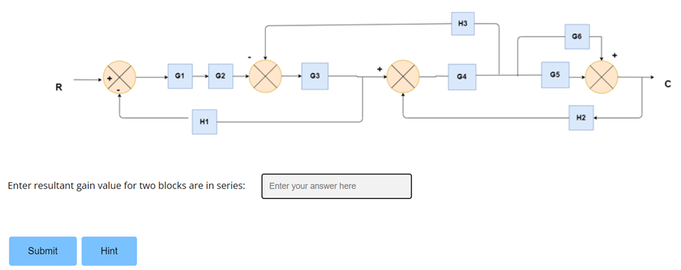
- Reduce the blocks connected in parallel. Enter the value in the respective field. Click on the ‘SUBMIT PARALLEL GAIN BLOCK’ Button to check whether the user has derived it Right or Wrong.
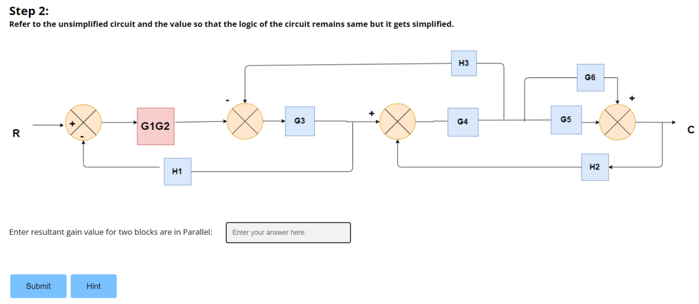
- Shift the take-off point ahead or behind the block. Enter the derived value in the respective field. Click on the ‘SUBMIT THE TAKE-OFF SHIFT’ Button to check whether the user has derived it Right or Wrong.
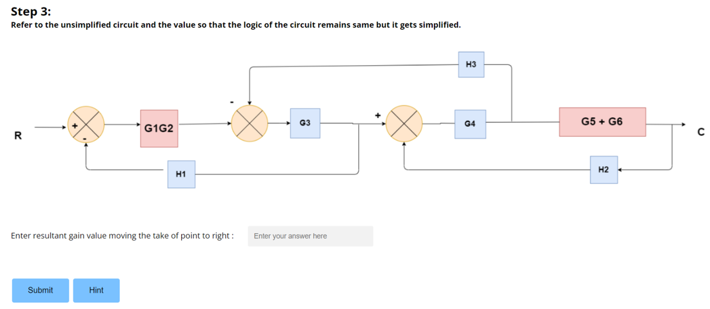
- Reduce the blocks connected in series. Enter the value in the respective field. Click on the ‘SUBMIT SERIES GAIN BLOCK’ Button to check whether the user has derived it Right or Wrong.

- Reduce the blocks connected in series. Enter the value in the respective field. Click on the ‘SUBMIT SERIES GAIN BLOCK’ Button to check whether the user has derived it Right or Wrong.
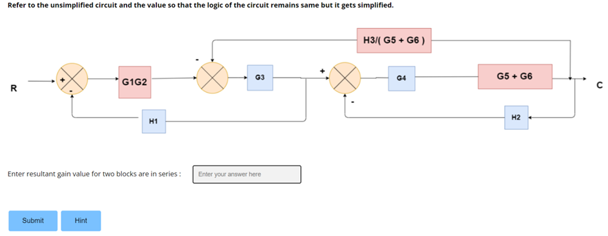
- Shift the summing point ahead or behind the block. Enter the derived value in the respective field. Click on the ‘SUBMIT THE SUMMING POINT SHIFT’ Button to check whether the user has derived it Right or Wrong.
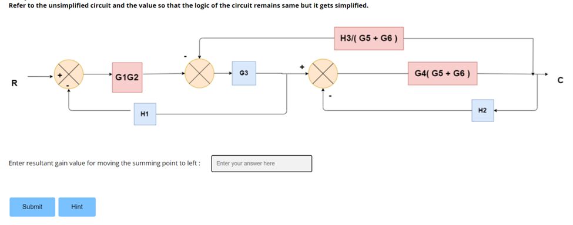
- Reduce the blocks connected in series. Enter the value in the respective field. Click on the ‘SUBMIT SERIES GAIN BLOCK’ Button to check whether the user has derived it Right or Wrong.
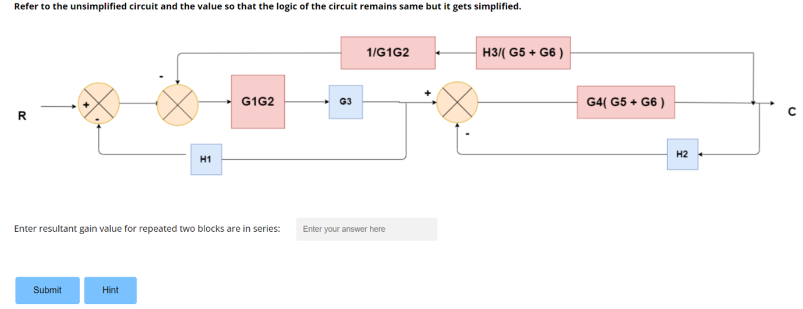
- Reduce the blocks connected in series. Enter the value in the respective field. Click on the ‘SUBMIT SERIES GAIN BLOCK’ Button to check whether the user has derived it Right or Wrong.
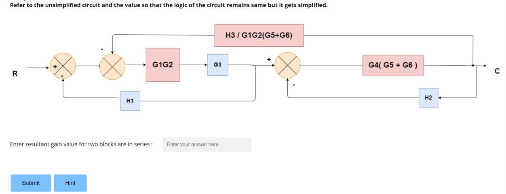
- Interchange/split/combine the summing point in the block. Enter the derived value in the respective field. Click on the ‘SUBMIT THE SUMMING POINT INTERCHANGE/SHIFT/COMBINE’ Button to check whether the user has derived it Right or Wrong.
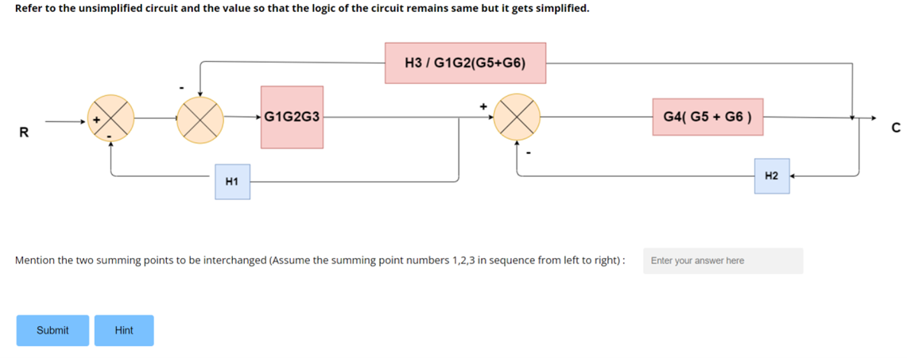
- Eliminate the minor internal feedback loops with suitable rule. Enter the value in the respective field. Click on the ‘SUBMIT FEEDBACK LOOP GAIN BLOCK’ Button to check whether the user has derived it Right or Wrong.
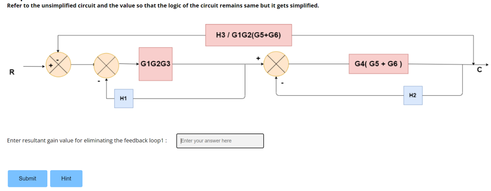
- Eliminate the minor internal feedback loops with suitable rule. Enter the value in the respective field. Click on the ‘SUBMIT FEEDBACK LOOP GAIN BLOCK’ Button to check whether the user has derived it Right or Wrong.
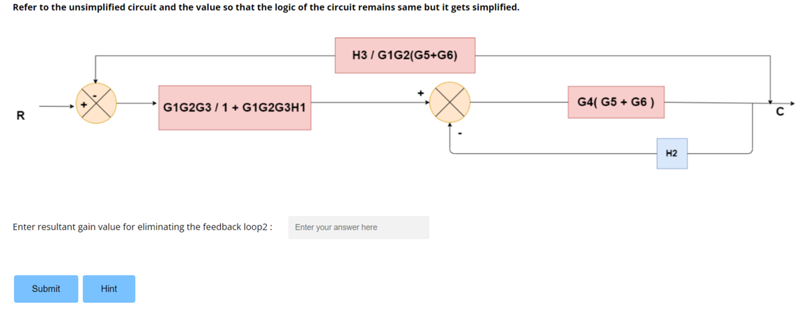
- Reduce the blocks connected in series. Enter the value in the respective field. Click on the ‘SUBMIT SERIES GAIN BLOCK’ Button to check whether the user has derived it Right or Wrong.
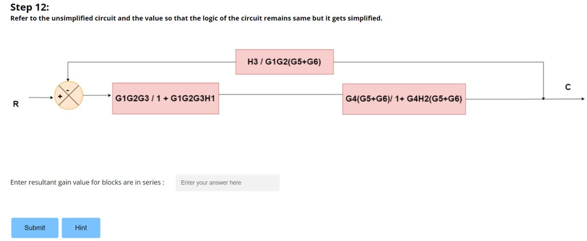
- Eliminate the minor internal feedback loops with suitable rule. Enter the value in the respective field. Click on the ‘SUBMIT FEEDBACK LOOP GAIN BLOCK’ Button to check whether the user has derived it Right or Wrong.
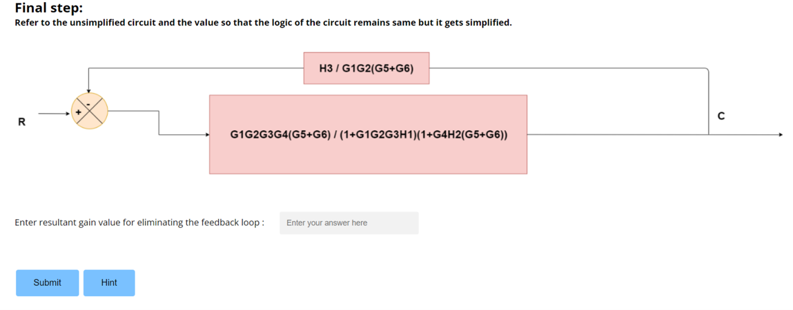
- Click the ‘SUBMIT button to view the overall transfer function for the given block diagram.
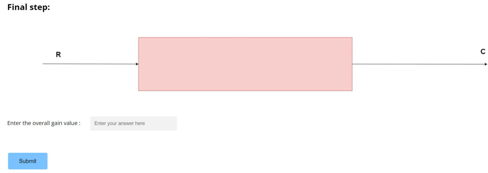
Steps for Reduction
- Rule 1 − Check for the blocks connected in series and simplify
- Rule 2 − Check for the blocks connected in parallel and simplify
- Rule 3 − Check for the blocks connected in feedback loop and simplify.
- Rule 4 − If there is difficulty with take-off point while simplifying, shift it towards right.
- Rule 5 − If there is difficulty with summing point while simplifying, shift it towards left.
- Rule 6 − Repeat the above steps till you get the simplified form, i.e., single block.